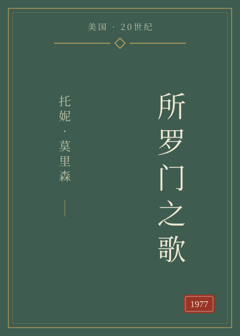
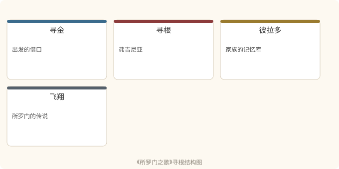

所罗门之歌
一、基本信息
| 作者 | 莫里森 |
|---|---|
| 成书/出版 | 1977年出版（作者页 B150 口径：所罗门之歌（1977）） Toni Morrison — Encyclopaedia Britannica（百科全书） |
| 国别/地区 | 美国 |
| 时代 | 现当代 · 20世纪 |
| 体裁 | 长篇小说 |
| 语言 | 英语 |

《所罗门之歌》寻根结构图（主题·结构图）
二、创作背景
作者页（B150）：莫里森 major_works 载'所罗门之歌（1977）'——仅次于《宠儿》的重要作品（B150 作者页定位）。
莫里森为诺贝尔文学奖得主（B150，详见 chonger 条核对）。
三、内容脉络
奶人（Milkman）寻金之旅变成寻根之旅：从密歇根到弗吉尼亚（通说待核）。
'所罗门跳飞'的民间传说与家族神话（通说待核）。
四、主要人物表
| 人物 | 身份 | 说明 |
|---|---|---|
| 奶人（Milkman） | 青年 | 寻根者（通说待核） |
| 彼拉多 | 姑母 | 无脐带的传奇女性（通说待核） |
五、主题与艺术特点
- 非洲裔美国人的民间传说史诗（通说）。
- 名字与传承（通说）。
- 飞的寓言（通说待核）。
六、影响与评论
- 作者页：莫里森代表作谱系（B150 作者页口径）。
Toni Morrison — Encyclopaedia Britannica（百科全书） - 全美书评人协会奖（1977年——通说待核）。
Toni Morrison — Encyclopaedia Britannica（百科全书）
七、阅读建议
难点
- 民间传说与现实的双重阅读。
- 大家族谱系。
- 《所罗门之歌》（南海出版公司新经典版，通说待核）。
先《最蓝的眼睛》→ 本作 →《宠儿》。
八、待核实
- '奶人'外号来历与情节核对。
- 1977年全美书评人奖核对。
- 飞行传说母题（非洲飞人传说）待核。